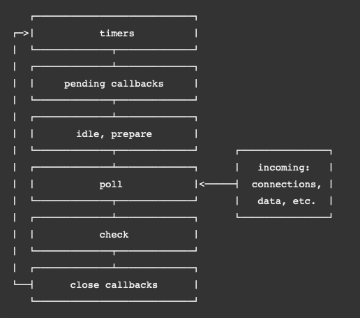

Node.js 正是因为其 Event Loop 事件调度器的设计让其拥有了进行非阻塞操作的能力————尽管 JavaScript 是单线程的———— 这通过在可能的时候，从内核处把任务卸载下来达到。
事件调度解释
当 Node.js 启动时，会初始化 Event Loop，处理输入的脚本文件。我们在脚本中我们可能会做 异步的 API 调用，定时器调度，或者调用 process.nextTick()，然后再开始处理 Event Loop。
下面就是 Event Loop 的运行处理流程：

在上面的图中，每个方框内的，Node.js 官方文档把它叫做 Phase，我把它叫做环节这样理解。
每个环节都有一个 FIFO 的回调函数队列需要执行。通常，每个环节都有其特别的地方，所以当 Event Loop 每进入一个环节的时候，都会进行本环节特定的操作，然后执行环节内的回调队列，直到：队列清空或已达到最大可执行数量。当队列为空或者达到执行数量限制就会进入下一环节。
因为任何一个操作都可能调度更多的操作，且在 POLL 环节处理的新事件是由内核排队的，poll事件可以在正在处理 poll 事件的时候 的时候就排队。由此，长时间运行的回调允许 Poll 环境运行的时间比 timer 环节更长。
环节概览
- timer 执行由 setTimeOut() 和 setInterval() 调度的回调。
- pending callbacks: 执行上一循环未执行完的I/O回调。
- idle, prepare 内部使用
- poll 获取新的 I/O 事件；执行 I/O 相关的回调（除了 closed 回调，这个回调是由 timers 和 setImmediate() 调度的）；node 可能会在这个环节阻塞。
- check:
setImmediate()回调被调用。 - close callbacks：一些关闭回调。比如
socket.on('close', ...)。
在每个事件循环间，Node.js 会检查是否需要等待异步I/O 或者定事器，如果没有的话，就会干净的关闭。
细节
timers
定时器。此个环节的回调会尽可能快的执行。然而，因为系统调度的问题，有可能会慢于我们指定的时间。
技术上来说，Poll 环节控制了合适执行定时器回调。
举例说明，我们希望调度一个 100ms 后的任务，然后我们的脚本却开始异步读一个文件，花了 95 ms。
const fs = require('fs'); |
当事件循环进入 poll 环节，其队列是空的 (fs.readFile并没有完成），所以会一直等待，直到某个定时器到期。然而，在等待了 95ms 后，fs.readFile 完成了，其回调函数被添加到了 poll 环节的回调队列内，这个回调函数会执行 10ms。当回调结束后，队列为空，因为定时器已经到期咯，所以会立马执行定事器的回调。在这个例子中，可以看到事实上定时器花了 105ms 才执行。
pending callbacks
这个环节会执行某些操作系统的回调，比如说 tcp 的错误。当一个 tcp 套接字收到一个 ECONNREFUSED 错误的时候，某些 *nix 系统会报告这个错误。这些些回调就放在这个环节的队列中。
poll
此环节有两个主要的功能：
- 计算其会阻塞多久，然后 poll I/O。
- 处理队列中的回调。
当 循环进入这个环节，其没有定时器调度的话，会有下面这一的事件发生：
- 如果 poll 回调队列不为空。那么就会遍历回调队列，同步执行，直到队列执行完，或者到达系统的硬限制。
- 如果 poll 回调队列为空。就会发生更多的事情了：
如果有setImmediate()调度，那么就结束 poll 环节，进入 check 环节。
如果没有setImmediate()调度，
一旦 poll 的队列为空，那么事件循环就会检查有没有定时器到期，如果有的话，那么就立马开始执行相应的回调。
check
这个环节允许我们在 poll 环节完成后立马执行回调。如果 poll 环节完成，同时有回调被 setImmediate() 调度，那么这些回调会立马执行。
setImmediate() 是一个特殊的定时器，其在事件循环的单独环节内运行。它使用了一个libuv的API来调度回调在 Poll 环节后立刻执行。
通常，当代码被执行，事件循环会经常性的遇到 poll 环节等待一个进入连接，请求等等的情况。然而，如果有回调被 setImmediate() 调度，poll 变得 idle，那么就会结束 poll，进入这么一个环节。
close callback
如果一个 socket 或者 handle 突然关闭， close 事件就会在此环节产生。否则的话，就会调用 process.nextTick()。
setImmediate() VS setTimeout()
这两个函数很类似，但是因为在何时调用而显得行为不同。
- setImmediate() 是为了能在 poll 环节完成后立刻执行
- setTimeOut() 是为了在一个指定的 ms 后执行。
这两个函数的执行顺序会因为其被调用的上下文而不同。如果两者都是在 main 模块内调用，那么这个由进程的性能决定。
例如，如果我们在一 I/O 循环外调度这两个函数，这两个函数执行的顺序是不定的，因为这由进程的性能决定。
// timeout_vs_immediate.js |
$ node timeout_vs_immediate.js |
然而，如果我们在一个 I/O 周期内调度这两个函数，那么 setImmediate() 总是会先执行：
|
$ node timeout_vs_immediate.js |
使用 setImmediate() 的优势是：如果是在 I/O 周期内，那么它永远会比 setTimeOut() 调度的回调先执行。
process.nextTick()
在前面的图表中我们并没有出现 process.netTick()，即使其是异步API的一部分。这是因为，技术上来说，process.nextTick() 并不是事件循环的一部分。相反，当前操作完成后，nextTickQueue 将会被处理，而不管当前处于事件循环的哪个环节。
回去看我们的图表，每当我们在任何一个环节调用 process.nextTick() 的时候，所有传递给 process.nextTick() 的回调都会在事件循环继续前优先解决。 这可能会产生一些比较坏的情况，因为我们可以通过递归调用 process.nextTick() 来饿死我们的 I/O ，这样事件循环永远到不了 poll 环节。
为什么会允许这样？
这就是设计上的统一了：一个API即使不需要是异步的也要设计成异步。例如：
function apiCall(arg, callback) { |
上面的代码做一个参数检查，如果不对，把错误传递给回调。最近更新的API允许将参数传递给process.nextTick（），允许它将回调后传递的任何参数作为参数传播到回调，因此您不必嵌套函数。
我们做的事情是：将一个错误返回给用户，但这只是在我们允许后面的代码被执行的情况下。通过使用 process.nextTick()，我们保证 apiCall 总是在后续的用户代码后，事件循环继续前执行。为了达到这个目的，JS 的回调栈允许回绕，且立刻执行提供的回调函数，此回调允许用户递归调用 process.nextTick() 而不会达到一个 RangeError: Maximum call stack size exceeded from v8 的错误。
这个设计可能会有一些潜在的问题出现。例如：
let bar; |
用户定义 someAsyncApiCall() 有一个异步签名，但实际上却是同步的。当其被调用时，回调函数会立刻执行。在回调中，其试图访问 bar 变量，但此时其作用域内并没有这个，因为还没有运行到后面的代码。
现在我们把这个回调放在 process.nextTick()内，那么脚本现在有了执行到最后的能力。但其也有不允许事件循环继续的能力。
let bar; |
这是现实世界的一个例子：
const server = net.createServer(() => {}).listen(8080); |
process.nextTick() vs setImmediate()
我们现在有了两个相似的调用，但他们的名字有点迷惑：
- process.nextTick() 会在当前环节立刻执行
- setImmediate() 在事件循环的下一环节。
事实上，这两个名称应该反过来才对。process.nextTick() 更迫切的需要执行，不过这是历史因素了。
推荐使用 setImmediate() ，这更易理解和更兼容。
为什么使用 process.netTick()？
两个原因：
- 允许用户处理错误，清理不需要资源，或者在事件循环继续前重新请求。
- 在回调栈解绑后，事件循环继续前有必要允许一个回调执行的时候。
const server = net.createServer(); |
listen() 在事件循环的开始执行，但是 listening 的回调被放在了 setImmediate()。如果不传递一个域名，那么绑定到端口会立刻执行。对于事件循环来说，其必须马上到达 poll 环节，因为有可能在 listenting 事件前已经有连接进来了。